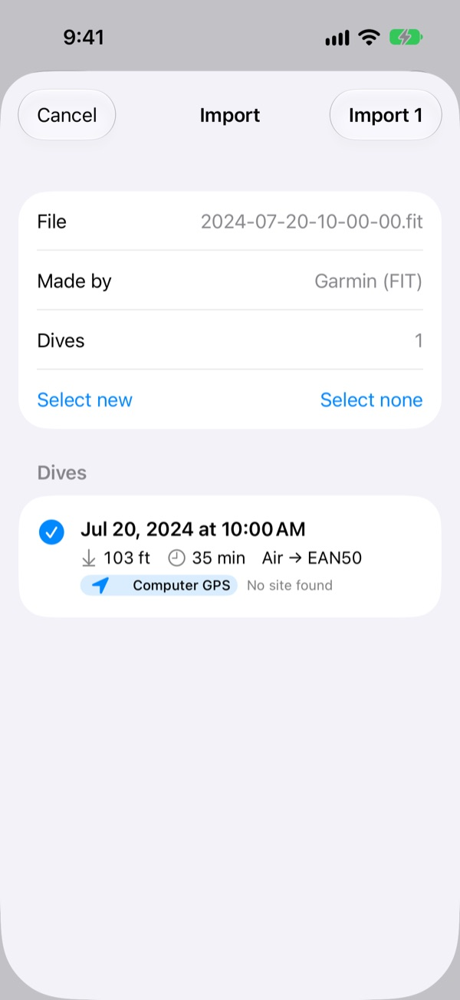
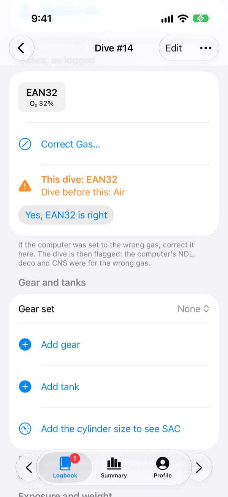
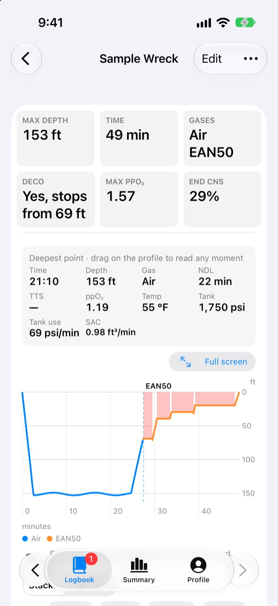
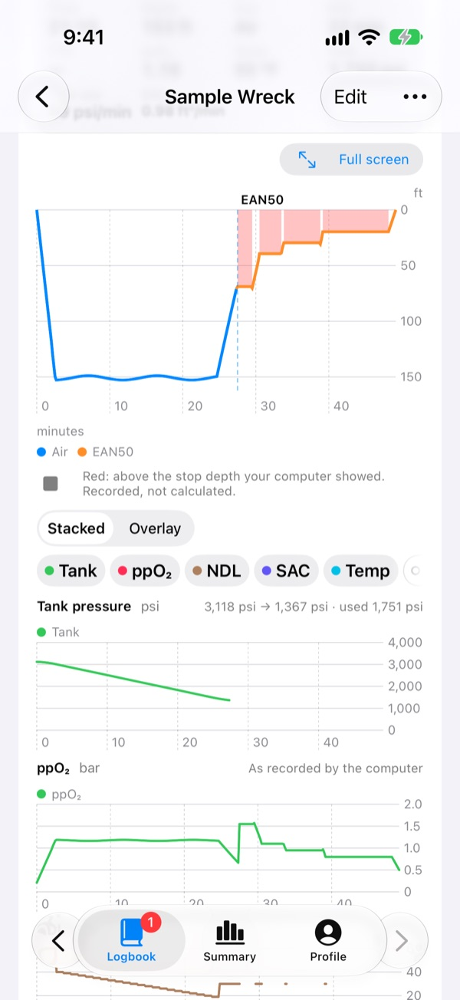
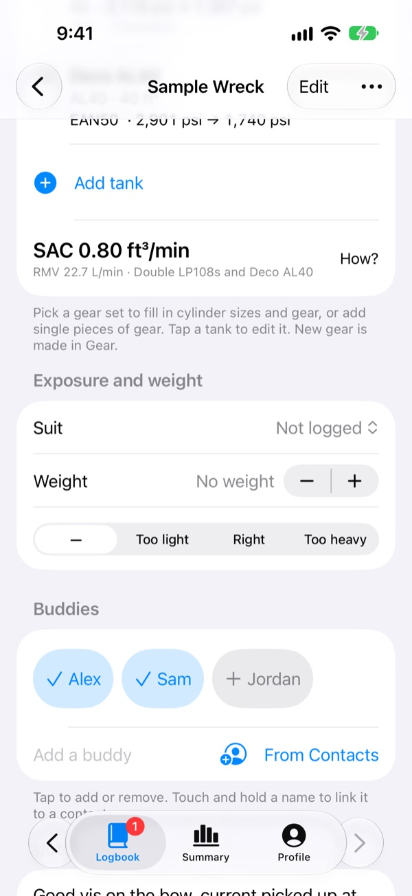
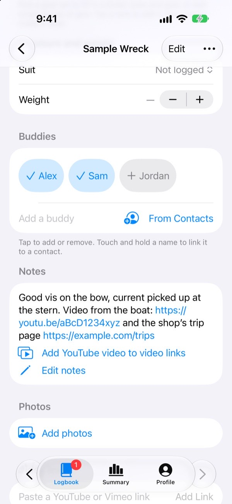
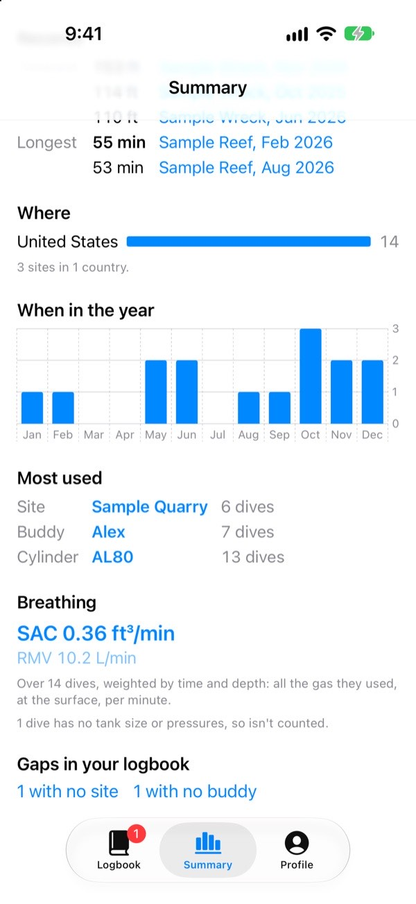

- Coming from MacDiveWhich file to export, and how to move without losing anything.
- Download from a computerShearwater and other Bluetooth computers, or a cable on the Mac.
- Garmin DescentImport .fit files from the watch or Garmin Connect.
Something not working? See Troubleshooting. Thermocline is a logbook: it shows what your dive computer recorded and never calculates decompression.
Get the app
Thermocline is for Apple devices only: iPhone, iPad, Mac and Apple Watch. During the beta it's installed through Apple's TestFlight app.
| Task | iPhone and iPad | Mac |
|---|---|---|
| Join the beta | Join the beta: one link for iPhone, iPad, Mac and Apple Watch. Open it on each device and install from TestFlight. The Apple Watch app comes with the iPhone app. Every device shares the same logbook through iCloud. | |
| Joined the iPhone beta before 18 November 2026 | That app has moved. See moving from the old iPhone app. | |
| Keep up to date | When TestFlight offers a new build, update every device you use. An older build stops sending changes until it's updated, and says so. Nothing is lost. | |
First launch and the tour
The first launch asks your name, your units and where your dives come from. Units are stored in metric; changing them only changes the display.
| Task | iPhone and iPad | Mac |
|---|---|---|
| Settings | The Profile tab | Thermocline → Settings |
| The tour | Profile → Help → Show the tour | Help → Take the Tour |
The tour walks through every screen on a sample logbook, not yours.
Screenshots on this page show the sample logbook from the tour: the dives and sites are made up. Tap one to see it full size.

Bring your logbook
Thermocline reads MacDive (its folder, XML or UDDF), a Shearwater Cloud database, Garmin .fit files, UDDF from any logbook, and CSV. You choose which dives to add, and anything it can't read is listed, never silently dropped.
| Task | iPhone and iPad | Mac |
|---|---|---|
| Import a file | Profile → Your data → Import a logbook file, then pick it from iCloud Drive or Files. | The File menu's import command (⇧⌘I). |
| Garmin .fit files | Select several at once. | Select several, or a whole folder. |
| MacDive's folder, with photos | Mac only. Bring the photos across later with the Mac app. | File → Import from MacDive… and choose MacDive's folder: dives, dive photos and card photos. MacDive's files aren't changed. |
| Choose the dives | Untick any you don't want, then Import. | |
| Undo an import | The restore point Before an import, saved before any import of more than one dive. | Undo Import… in the import report, or the same restore point. |
When the import finishes, a report shows how many dives were added, which items were not imported and why, and anything to check. Dives whose file had no gas wait in To confirm.
Which MacDive file to use
MacDive can give you its XML, its UDDF, or (on the Mac) its whole folder. They don't carry the same things:
| What it carries | MacDive XML | MacDive UDDF | MacDive folder (Mac) |
|---|---|---|---|
| Dives, sites, buddies, gases | Yes | Yes | Yes |
| Tank sizes | Yes | No: its sizes aren't water capacities, so they're left blank | Yes |
| Depth profiles | Every dive | Every dive | All but dives MacDive downloaded on iPhone or iPad, which it stores encrypted |
| The computer's NDL and ppO₂ along the dive | Yes | No | Yes, except those encrypted dives |
| The computer's CNS | Yes | No | Yes |
| Gear, tags and dive types | Yes | No | Yes |
| Dive and card photos | No | No | Yes |
| Task | iPhone and iPad | Mac |
|---|---|---|
| Best route | Export your dives from MacDive as XML, save the file to iCloud Drive, and import it. | Import MacDive's folder, then the XML on top. The XML fills in the profiles, NDL and ppO₂ of the encrypted dives. |
| Already imported the UDDF | Import the XML too. Dives already in your logbook are matched, not added again, and only what's missing is filled in, tank sizes included. Nothing you've entered or corrected is changed. | |
Garmin Descent watches
A Garmin Descent keeps one .fit file per dive. There are two ways to get them:
- From the watch: connect it to the Mac with its cable and open the GARMIN → Activity folder. On the Mac you can import the whole GARMIN folder; files that aren't dives, such as runs and settings, are skipped.
- From Garmin Connect: open the dive and choose Export Original. That gives a .zip: unzip it first, then import the .fit file inside.
Positions come from the watch's GPS. On a drift the watch saves where you surfaced as the start; the import finds where you actually went in, so the dive is matched to that site. Add any other wrecks you passed to the notes.


Download dives from your computer
Put the dive computer in its Bluetooth mode first. On a Shearwater: Menu → Bluetooth. It stays there about two minutes. Only dives newer than your last download are fetched.
| Task | iPhone and iPad | Mac |
|---|---|---|
| Open | Logbook → Download Dives | File → Download from Dive Computer… (⇧⌘D) |
| Connect | Bluetooth. Pick your computer under Nearby; the first time, type the PIN shown on its screen. | Choose Bluetooth or USB Cable. For a cable, pick your computer's model and its port, and follow Before you start. |
| Finish | Untick any dive you don't want, then Keep. Unticked dives stay on the computer and are offered again next time. | Download. |
The clock question. The first download from each computer asks What zone is the computer's clock set to? Most computers record local time with no time zone, so this keeps your dive times right when you travel. The answer is remembered for that computer.
After choosing dives, you can step through them one by one to set the site and gases, or Finish later: they wait in To confirm.
Deleted a dive and want it back? Turn on Download every dive on the computer. It takes longer; dives already in your logbook are skipped.

Shearwater Predator and Petrel 1
These use older Bluetooth (Bluetooth Classic) that iPhones and iPads can't use. On the Mac, pair the computer in System Settings → Bluetooth first, then choose USB Cable in the download window: its port may appear in the list. Put the computer in its Bluetooth upload mode and choose Download. This hasn't been tried on a real Predator or Petrel 1 yet, so please send the download log whether it works or not. On iPhone, import their dives from Shearwater Cloud or a UDDF file instead.
Supported computers
Thermocline downloads with libdivecomputer, the open-source library many logbooks share. It knows several hundred models from most makers. To see yours, open the download screen and choose Supported computers; each one says whether it works on iPhone and iPad or needs the Mac.
| Connection | Where it works | Tried so far |
|---|---|---|
| Bluetooth LE | iPhone, iPad and Mac | Shearwater Perdix and Perdix 2. Other models should work: tell us. |
| USB or serial cable | Mac only | Built, not yet tried on real hardware. |
| Bluetooth Classic (Predator, Petrel 1 and other older models) | Mac only, paired as a serial port (how) | Not yet tried. |
| Garmin Descent (.fit files) | Import on iPhone, iPad and Mac (how) | Descent dives, including drift dives. |
Got a computer we haven't tried? Help us test it.
Confirm site and gases
Dives still missing a site or confirmed gases wait in To confirm. Nothing stops them saving; fill them in when you like.
| Task | iPhone and iPad | Mac |
|---|---|---|
| Find them | At the top of Logbook, under To confirm. | Go → To Confirm (⌘2) |
| Confirm | Open one, then Choose a site and tap Yes, these gases are right (or Correct Gas…). | The banner on each dive offers Confirm Site and Gases…, Choose Site… or Confirm Gases…. |
Thermocline suggests the site from the dive's position: your own sites first, then the built-in lists of more than 73,000 dive sites and wrecks, which work offline.


Read a dive
| Task | iPhone and iPad | Mac |
|---|---|---|
| Read any moment | Drag across the chart. | Point at the chart. |
| Log a dive by hand | Logbook → Log by Hand | ⌘N |
- Safety values sit in a fixed strip at the top of every dive, always in the same place.
- The profile: chips under the chart show or hide Tank, ppO₂, NDL, SAC, Temp, CNS and Ascent, as Stacked strips or one Overlay. Only what the dive recorded gets a chip. NDL is the computer's own and stops during deco, where the red band shows the stops. On a narrow iPhone the chips stay on one line and scroll sideways. Try it on the home page.
- Rebreathers: from any computer or file that records them, the ppO₂ strip shows the setpoint with the voted ppO₂ (and each cell, where recorded), and the readout gives the setpoint at that moment. A switch from the diluent to any other gas is labelled as a bailout.
- Gas use: tap or click How? next to the SAC figure to see every input: the cylinder, its water capacity, pressures, temperature and the real-gas correction.
- Editing: edit any dive. A correction keeps the computer's original reading.
- Weight: the first tap on + sets No weight, for a dive with none worn. Tap − from there to clear it.
- Links in notes: web links in a dive's notes can be tapped or clicked. When you've finished typing, tap Done above the keyboard: the links then show, and a YouTube or Vimeo link gets an Add … to video links button below the notes. To type in the notes again, choose Edit notes.










Sites, positions and the Apple Watch
| Task | iPhone and iPad | Mac |
|---|---|---|
| Add a site | Profile → Sites, then the add button: Find or name a site or Mark spot here (GPS). | Go → Sites (⌘4), then Add Site… |
| Find a position | A site without one offers Find position: check the suggestion on the map, type in coordinates, or drop a pin. | Find Positions… works through every site without one, one at a time. |
Apple Watch: at the surface, open Thermocline on the watch and press Mark spot once it has a good fix. You can add a name. The spot goes to your iPhone, which looks it up and puts it in To confirm.
Site positions are for logging, not for navigation.

Gear and tanks
| Task | iPhone and iPad | Mac |
|---|---|---|
| Open Gear | Profile → Gear | Go → Gear |
- On a cylinder, Model opens the cylinder catalogue: search by maker or model (for example "PST LP104") to fill in its published sizes, or type your own numbers.
- Tick Doubles (manifolded pair) for a twinset.
- A steel tank stamped with a +: turn on Plus rating while the last hydro test kept the +. It shows as, for example, 2400+. This switch appears when cylinder sizes are shown in cubic feet.
- Tanks on each dive are under the dive's gas section (Add tank, Gear set).
Merge and join dives
- Merge is for one dive recorded by two computers. Both recordings are kept and you can switch between them on the chart.
- Join is for one dive split in two by a brief surfacing.
- Thermocline never does either on its own. When it spots a likely pair, a banner at the top of the logbook offers to Review them.
| Task | iPhone and iPad | Mac |
|---|---|---|
| Do it yourself | Tap Select, choose two dives, then Merge or Join. | Select two dives and right-click: Merge These Dives… or Join These Dives… |
| Changed your mind | Undo straight away, or Separate these dives on the dive at any time. | |
Photos and video links
- Add photos on a dive copies them from your library into the logbook.
- To save iCloud space, turn on Sync → Save iCloud storage on dive photos on every device. Photos are then linked to iCloud Photos instead of copied, and videos from your library can be added. Thermocline asks for Photos access only when you turn this on.
- Video links: paste a YouTube or Vimeo link under a dive's photos. Only the link is kept. A link already in the notes can be added from there (see Read a dive).
- The same video on several dives: select the dives (on iPhone, tap Select first), choose Edit … Dives…, and add the link under Video links. It's added to every selected dive, and links they already have are kept.
Summary and breathing
The Summary tab (Summary in the Mac's sidebar) counts your logbook: dives per year and per month, depths, gases, records, where you dive, and your most-used site and buddy. Choose a range at the top, such as one year, and tap any number or bar to see the dives behind it.
- Breathing shows your SAC and RMV over every dive in the range that has a tank size and start and end pressures, weighted by time and depth. Tap it to see which dives were counted.
- Some imported dives have no tank size, so Breathing may be empty at first (see Which MacDive file to use). Set the tanks on your dives, in Gear or on each dive, and it fills in.


Sync with iCloud
| Task | iPhone and iPad | Mac |
|---|---|---|
| Turn on sync | Profile → Sync | Thermocline → Settings → Sync |
Every device signed in to the same Apple Account then shares one logbook, stored in your own private iCloud. Changes made offline wait on the device and send when it's back online.
The Sync section shows the status, anything Waiting to send, and whether this device and your others match. Sync now checks straight away.

Export, restore points and erase
| Task | iPhone and iPad | Mac |
|---|---|---|
| Export | Profile → Your data | The File menu |
| Restore points | Profile → Your data → Restore points | Settings → Your data → Restore Points |
- Export: UDDF is the complete export and your way out to any logbook. Also available: a spreadsheet (CSV), MacDive XML, bookmarks for cave survey (CSV) and an experience summary (text) for course prerequisites.
- Restore points: one is saved before turning on sync, before a large import, a merge, a join, an erase and before anything is deleted. Restoring saves your current logbook as a restore point first, so you can undo it.
- Erase: Erase logbook… offers to export first. With sync on, your other devices follow.

Still stuck?
See Troubleshooting, or send feedback from TestFlight or to support@thermoclineapp.com.